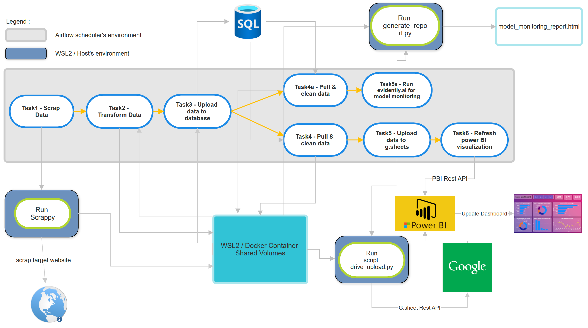
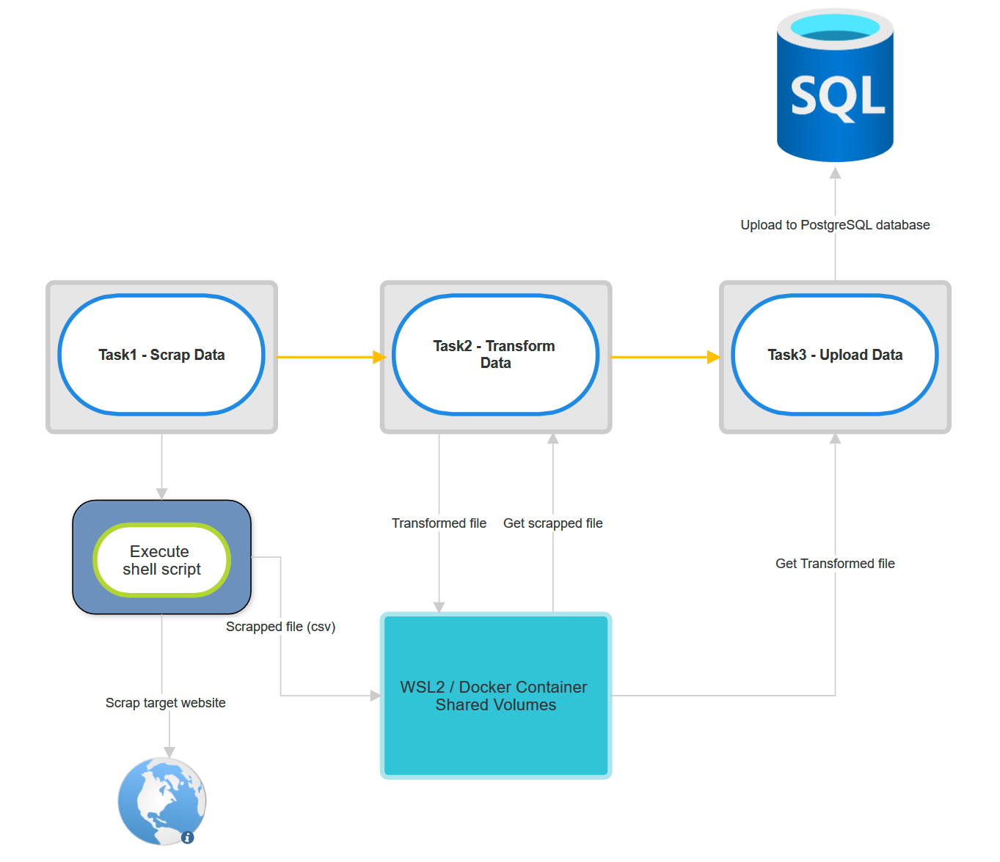
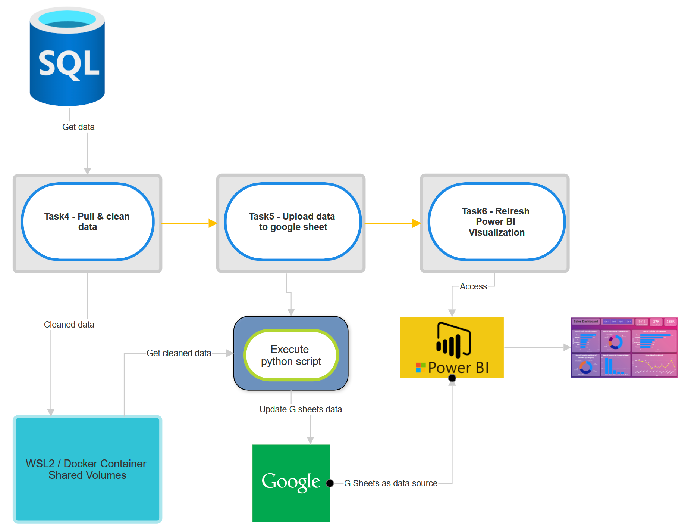
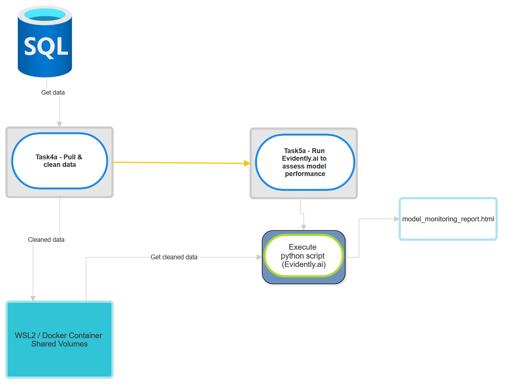

I’ve come to realize that a data scientist’s role includes building data pipelines, monitoring machine learning models, and creating/maintaining visualization dashboards. In this mini-project, I’ve implemented a comprehensive end-to-end data automation using Apache Airflow, encompassing data scraping, model monitoring, and updating power BI visualization dashboard.
Overview
Take a look at diagram below.

This DAG consists of a total of eight tasks. It starts with fresh housing data being scraped as input, which is then fed into a ML model (predicting houses prices) . The model performance will be evaluated on the new data using Evidently.ai. Additionally, the newly scraped data is also updated to a Google Sheet-based Power BI data source, updating the Power BI visualization dashboard.
In summary:
Input : New data (scrapped data)
Output1 : updated model monitoring result.
Output2 : updated power BI online dashboard.
The data is about houses information in Tangerang City, with more than 40 sub-districts.
To prepare for this project, there are some requirements:
WSL2 (Windows sub-system for linux)
Given that I’m using Windows 11, I’ll use WSL2.
Airflow with Docker
Airflow needs to be installed within a Docker environment to create an isolated environment for workflow orchestration.
Power BI Pro Account & Microsoft Azure Account
These accounts are essential for utilizing the Power BI REST API, which is necessary to refresh the Power BI visualization dashboard.
ML Model
Prior to commencing the project, I’ve conducted data exploration and experimented with various ML models to ensure the best model is ready.
Scraping Application
In this project, I’ll be using Scrapy for web scraping tasks.
Task 1, 2, & 3
Below is the diagram of task 1, 2 & 3

Flow of task 1:
Establish connection to host (WSL2) from docker container via SSH Connection.
Execute shell script to run scrappy.
The scrapped file will be in csv format and uploaded to shared folder.
Flow of task 2:
Get the scrapped file from shared folder.
Transform or change the data dimension into proper format.
Upload the new transformed file into the shared folder.
Flow of task 3:
Connect to PostgreSQL database.
Get the transformed data from shared folder.
Upload it into PostgreSQL database.
Task 4, 5, & 6
Below is the diagram of task 4, 5 & 6

Flow of task 4:
Get data from database.
Clean the data for the purpose of data visualization.
Upload it to shared folder.
Flow of task 5:
Connect to host machine via SSH connection.
Execute python script to get the cleaned data from shared folder and upload it to google sheet via google spreadsheet API.
Flow of task 6:
Connect to power BI via power BI API.
Refresh the power bi visualization dashboard.
Power BI will detect changes in dataset (google sheet) which already updated on task 5.
Power BI will update the visualization based on the new dataset.
Below is the Power BI visualization dashboard :
Task 4a & 5a
Below is the diagram of task 4a & 5a

Flow of task 4a:
Get data from database.
Clean the data for the purpose of Machine Learning.
Upload it to shared folder.
Flow of task 5a:
Connect to host machine via SSH connection.
Execute python script to get the cleaned data from shared folder and run Evidently.ai to generate model report.
Generate the report as html file.
Demonstration
On this video below, I’m going to demonstrate how to run the Airflow DAG and illustrate the expected results.